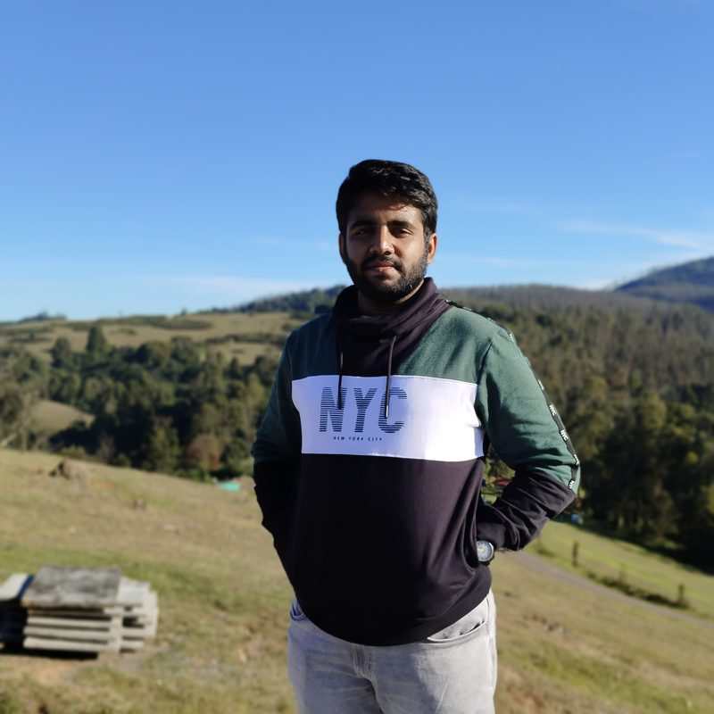

About
Who I am, what I've studied, and what I'm good at.

I'm Bhathrinaathan, a graduate of the MSc Computer Science (Intelligent Systems) at Trinity College Dublin, with a B.E. in Computer Science (CGPA 8.8/10) and two internships building full-stack, data-heavy applications. I like understanding a model well enough to build it from the ground up, then being pragmatic enough to ship it inside a real system.
At Trinity my work centred on the mechanics of modern AI: decoder-only transformers written in PyTorch and analysed for how depth scales with task complexity; an NLP study showing that tense and temporal structure alone predict fake news at 0.89 AUC; search and reinforcement-learning agents benchmarked head-to-head over 20,000 games; a semantic-web knowledge graph with SPARQL and SHACL; and an LLM-backed disaster-response platform built with a 10-person Extreme Programming team.
Before that I spent 14 months as a web developer intern at gCurv Technologies building MERN applications with Puppeteer automation and managing MongoDB and PostgreSQL databases on GCP. I care about measured results, clear write-ups, and code other people can run. Right now I'm learning agentic AI, RAG systems and LLM-focused projects, and away from the keyboard I read neuroscience: I'm fascinated by how minds work, artificial and human. I've finished my MSc and I'm open to software engineering, AI / ML and analyst roles in Dublin, available to start now.